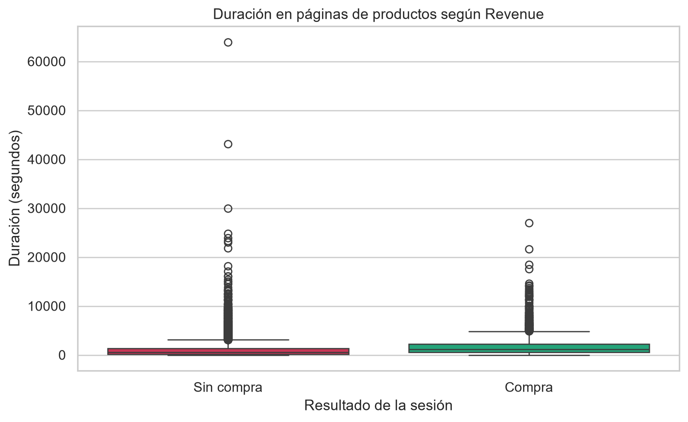
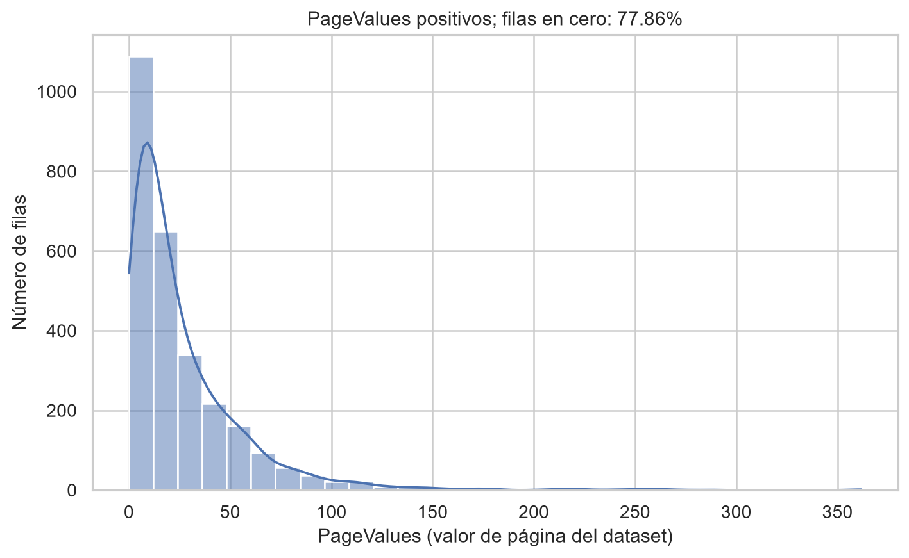
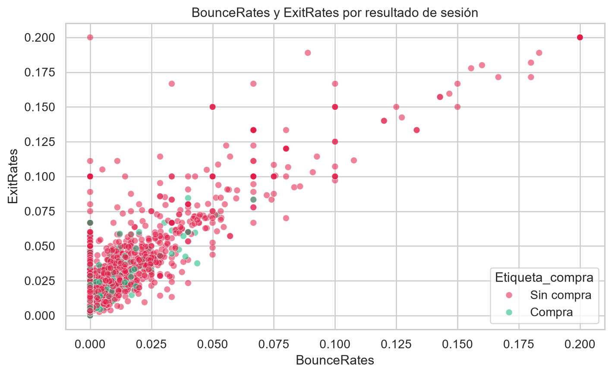

UNIMINUTO · Ingeniería de Sistemas · Ibagué · 2026
Sustentación técnica · Minería de Datos y Métodos Numéricos
ShopPredict Intención de compra
Sistema analítico y predictivo sobre el comportamiento de navegación en comercio electrónico. Integra auditoría de datos, modelado supervisado reproducible, métodos numéricos y una aplicación web con API verificable.
Inicio rápido en Visual Studio Code:npm install && npm run build && npm run dev → http://localhost:3000 (justificación de proyecto y stack en lámina 2; despliegue en lámina 10).
01 · Justificación del proyecto, stack tecnológico y defensa ante el jurado
¿Por qué elegimos ShopPredict y por qué esta arquitectura?
1. ¿Por qué elegimos ShopPredict (Intención de Compra)?
Problema real y medible: en comercio electrónico el 84,37 % de visitas se va sin comprar (solo 15,63 % convierte). Con 12.330 sesiones reales UCI/Kaggle podemos detectar compra temprana usando señales claras (PageValues, duración y tasa de rebote).
2. ¿Para qué aplicación web + API y no solo un cuaderno?
Producto usable, no solo código suelto: un notebook no sirve a un usuario final. Construimos frontend React + API REST (/stats, /predict, /dataset/validate, /docs) para probar sesiones reales y validar CSV sin alterar el dataset.
3. ¿Por qué VS Code + Node/Express + AI Studio / Cloud Run y no Vercel?
Portabilidad total full-stack: Vercel está orientado a frontends estáticos o funciones serverless efímeras y separa el backend; nosotros empaquetamos UI + servidor API + modelo en una sola app que corre 100 % local en VS Code/carpeta sin depender de internet ni de cuenta Vercel, y lista para Docker/Cloud Run. Google AI Studio se usó solo como entorno de desarrollo y validación asistida; la entrega final es independiente.
4. ¿Cómo se conectan Minería de Datos y Métodos Numéricos?
Cada área resuelve una pregunta distinta: la Minería (Random Forest) clasifica si habrá compra (Revenue sí/no); los Métodos Numéricos modelan la relación continua ProductRelated → Duración mediante Regresión lineal (ŷ) para tendencia global y Lagrange (P₃) para interpolación exacta en 4 nodos.
Pregunta típica: "¿La IA (AI Studio) hizo la sustentación por ustedes?"
No: usamos IA como herramienta asistida de desarrollo y auditoría de código (metodología documentada en AUDITORIA.md y PROMPT_MAESTRO_IA_STUDIO.md). Cada métrica proviene del dataset UCI/Kaggle y fue verificada con pruebas unitarias y Holdout 80/20.
Pregunta típica: "¿Qué pasa si no tienen link de Vercel?"
Nuestro requisito técnico es entrega ejecutable en carpeta/VS Code (localhost:3000) y contenedor Dockerfile portable a Cloud Run. Además contamos con enlace web del entorno de desarrollo como alternativa inmediata.
02 · Auditoría y calidad del dataset
Depuración previa para evitar sesgos por duplicados
Flujo de auditoría del CSV
Reglas de integridad aplicadas
1
Cero valores faltantes en el archivo fuente (Online Shoppers Purchasing Intention, UCI/Kaggle).
2
125 filas duplicadas exactas detectadas y eliminadas antes de particionar para impedir fuga entre entrenamiento y prueba.
3
Desbalance de clases real: 1.908 compras (15,63 %) frente a 10.297 sesiones sin compra (84,37 %).
4
Trazabilidad estricta: se excluye cualquier identificador artificial (Session_ID) y no se confunde correlación con causalidad.
Pregunta jurado: "¿Por qué borraron 125 filas si eran pocas?"
Si una fila repetida cae en entrenamiento y también en prueba, el modelo "memoriza" esa sesión y las métricas salen falsamente altas (data leakage).
Pregunta jurado: "¿Por qué 15,47 % y 15,63 % aparecen ambos?"1.908 / 12.330 = 15,47 % es sobre el CSV bruto; 1.908 / 12.205 = 15,63 % es sobre las filas únicas tras deduplicar, usadas en el modelado.
03 · Arquitectura de preparación sin fuga de datos
Transformación encapsulada en pipelines reproducibles
Codificación nominal explícita
Además de Month y VisitorType, los códigos OperatingSystems, Browser, Region y TrafficType se tratan como variables categóricas nominales mediante One-Hot Encoding.
Escalamiento y reducción (Sesión 4)
Se compararon StandardScaler, MinMaxScaler y RobustScaler, más reducción dimensional por PCA ajustados únicamente sobre entrenamiento.
Criterio frente a datos sintéticos
Las columnas sintéticas de marketing generadas en ejercicios previos quedan excluidas del modelo principal para preservar la validez empírica del dataset.
Pregunta jurado: "¿Por qué StandardScaler solo en Regresión Logística y no en Árboles?"
Regresión Logística multiplica pesos por magnitudes (necesita media 0 y varianza 1); los árboles solo hacen cortes de umbral (ej. PageValues > 5), invariantes a escala.
Pregunta jurado: "¿Por qué One-Hot en Browser o Region si ya son números?"
Porque Browser = 4 no vale "el doble" que Browser = 2: son códigos de categoría nominal, no cantidades matemáticas.
04 · Análisis exploratorio de datos (EDA)
Cuatro evidencias visuales determinantes del comportamiento
Duración en producto según compra

Mediana: 510 s sin compra vs. 1.110 s con compra.
Distribución de PageValues

PageValues = 0 en 77,86 %; con PageValues > 0 la conversión alcanza 56,34 %.
Dispersión BounceRates vs. ExitRates

Fuerte colinealidad positiva (r = 0,913); sesiones con rebote alto casi no convierten.
Matriz de correlaciones numéricas
Mayor asociación lineal con Revenue: PageValues (r = 0,493).
Pregunta jurado: "¿Si PageValues tiene r = 0,493 significa que causa la compra?"
No: correlación mide asociación estadística, no causalidad. Indica que visitar páginas cercanas al pago coincide fuertemente con comprar.
Pregunta jurado: "¿Para qué sirve el EDA si luego entrena Random Forest?"
Detecta sesgos, colinealidad (Bounce–Exit r = 0,913) y variables clave (PageValues, duración) antes de elegir algoritmo y métricas.
05 · Sesión 7 · Clasificación por reglas
Árbol de decisión: interpretabilidad y control de impureza
Esquema conceptual didáctico; no representa los umbrales reales del árbol entrenado.
Propiedades técnicas en ShopPredict
Particiona secuencialmente el espacio de atributos mediante umbrales binarios.
No requiere escalamiento de variables cuantitativas (invariante a transformaciones monótonas).
Alta trazabilidad de decisiones, aunque propenso a alta varianza sin límite de profundidad.
Gini(t) = 1 − (p₀² + p₁²)
Accuracy
Bal. Acc.
Precision
Recall
F1
ROC-AUC
0,8574
0,7407
0,5423
0,5707
0,5561
0,7407
Resultados medidos en el holdout 80/20 (2.441 filas de prueba, semilla 42).
Pregunta jurado: "¿Para qué sirve el Árbol si Random Forest tuvo mejor F1?"
Es nuestra línea base interpretable: explica cómo se crean reglas Sí/No con Gini y demuestra por qué promediar muchos árboles (Random Forest) sube F1 de 0,5561 a 0,6348.
Pregunta jurado: "¿Por qué su Recall (0,5707) es mayor que RF pero F1 menor?"
Detecta un poco más de compras positivas, pero comete muchos más falsos positivos (Precision baja a 0,5423 frente a 0,7715 en Random Forest).
06 · Sesión 8 · Comparación de paradigmas supervisados
Reglas, probabilidad condicional y distancia entre sesiones
Árbol de decisión (Medido)
Mecanismo: divide recursivamente reduciendo impureza de nodo.
Resultado verificado: Accuracy 0,8574 · F1 0,5561.
Naive Bayes (Conceptual)
Evidencia E: comportamiento de sesión
P(Compra | E) ∝ P(E | Compra) · P(Compra)
Comparación posterior entre clases
Mecanismo: asume independencia condicional entre predictores.
Estado en auditoría: pendiente de ejecución reproducible sobre el mismo holdout.
KNN (Conceptual)
Mecanismo: clasifica por votación de los k vecinos más cercanos (exige StandardScaler).
Estado en auditoría: pendiente de evaluación reproducible sobre la partición 80/20.
Pregunta jurado: "¿Por qué Naive Bayes y KNN no tienen porcentajes en la tabla?"
Por rigor científico: no inventamos ni copiamos métricas sin corrida reproducible sobre la misma semilla 42 (holdout 80/20). Solo se reportan los 3 modelos auditados.
Pregunta jurado: "¿Para qué sirven y qué diferencia hay entre ambos?"Naive Bayes estima probabilidad rápida suponiendo variables independientes; KNN clasifica por cercanía geométrica (sensible a escala y a Bounce–Exit colineales).
07 · Resultados verificados y matriz de confusión
Random Forest logró el mayor F1 (0,6348) en la partición 80/20
Modelo
Escala
Acc.
Prec.
Recall
F1
AUC
Árbol de decisión
Original
0,8574
0,5423
0,5707
0,5561
0,7407
Random Forest
Original
0,9029
0,7715
0,5393
0,6348
0,9248
Regresión logística
Standard
0,8873
0,7560
0,4136
0,5347
0,8997
Método de predicción elegido
Random Forest (F1 = 0,6348)
206 VP · 176 FN · 61 FP · 1.998 VN
Fórmulas de evaluación (holdout 80/20)
Acc=(VP+VN)/N · P=VP/(VP+FP)
R=VP/(VP+FN) · F1=2PR/(P+R)
Pregunta jurado: "¿Por qué eligieron F1-Score y Random Forest en lugar de solo Accuracy?"
Con 84,37 % sin compra, decir siempre "No compra" daría 84 % de Accuracy y 0 % útil. Random Forest logra mayor F1 (0,6348) y AUC (0,9248) equilibrando Precision (0,7715) y Recall (0,5393).
Pregunta jurado: "¿Por qué tiene 176 Falsos Negativos?"
Porque las clases están desbalanceadas (15,63 % compras). Es una limitación real que se mitiga ajustando el umbral de probabilidad o ponderando clases en producción.
08 · Sesión 9 · Aprendizaje no supervisado
Segmentación de sesiones: diseño metodológico por validar
Flujo K-means propuesto
Variables candidatas: ProductRelated, ProductRelated_Duration, BounceRates, ExitRates y PageValues.
Clustering jerárquico (Ward)
Esquema conceptual; no representa clústeres reales ni una corrida calculada de ShopPredict.
Pregunta jurado: "¿Para qué sirve Clustering si ya clasificamos con Random Forest?"
Agrupa visitantes por comportamiento sin conocer la etiqueta Revenue (ej. "curiosos de rebote" vs "compradores profundos") para personalizar campañas de marketing.
Pregunta jurado: "¿Por qué quitar Revenue al agrupar y por qué no hay Silueta?"
Si incluyes Revenue ya no es no supervisado. No mostramos índice Silueta ni Codo porque esta fase quedó en diseño conceptual sin corrida auditada.
09 · Ingeniería del sistema, conclusiones y operación
Arquitectura completa verificada localmente y preparada para nube
Conclusiones y herramientas de despliegue
Minería (método elegido):Random Forest lideró el F1 (0,6348, AUC 0,9248) frente a Árbol (0,5561) y Regresión Logística (0,5347).
Despliegue de datos (stack): frontend React + Vite + Tailwind conectado a API REST Express / Node.js 22 (/stats, /predict, /dataset/validate, /docs), compatible con FastAPI.
Rigor CSV: la validación temporal audita formato y duplicados sin alterar datos en memoria (persisted: false).
Ejecución principal (VS Code / carpeta) y opción web
1
Principal · VS Code y carpeta: abre index.html o pulsa F5 / npm run dev (localhost:3000).
2
Alternativa web (entorno dev / Cloud Run):ais-dev-...us-west1.run.app o gcloud run deploy shoppredict --source ..
Pregunta jurado: "¿Por qué AI Studio + VS Code + Cloud Run y no Vercel?"
Vercel prioriza frontends estáticos/edge; nuestra arquitectura corre React + API de predicción + lectura CSV en un único servidor portable sin internet (VS Code) ni lock-in.
Pregunta jurado: "¿Qué hace realmente el botón Validar CSV?"
Revisa 18 columnas, tipos y duplicados en el servidor devolviendo persisted: false; nunca sobrescribe el dataset oficial ni contamina el modelo entrenado.
11 · Métodos numéricos · 1/7 · Qué datos van en cada eje y por qué se aplicó cada método
¿Para qué aplicamos Regresión Lineal y Lagrange sobre ShopPredict?
Eje X (horizontal):ProductRelated = páginas de producto vistasEje Y (vertical):ProductRelated_Duration = tiempo acumulado (segundos)
1 · Regresión lineal (ŷ) 2 · Lagrange (P₃)
¿Para qué sirve aquí? Conectar las páginas vistas con el tiempo invertido en tienda: medir cuántos segundos suma cada página (Regresión) y estimar un tramo exacto entre perfiles clave (Lagrange).
Explora sobre los datos reales (cuál es cuál)
Cada punto representa un tramo real agrupado del dataset limpio (12.205 sesiones). Observa cómo la recta resume el patrón y el polinomio toca cada nodo exacto.
1 · Regresión lineal (ŷ)
Por qué se aplicó: resume la tendencia global sobre las 12.205 sesiones tolerando ruido real.
2 · Lagrange (P₃)
Por qué se aplicó: crea una curva suave exacta (error 0) que une los 4 perfiles de navegación.
Pregunta jurado: "¿Por qué aplicar 2 métodos numéricos si ya tenían Random Forest?"
Random Forest clasifica una categoría (Compra Sí/No); Regresión y Lagrange modelan una variable continua (¿cuántos segundos dura la sesión según x páginas?).
Representación sobre el plano (X: páginas · Y: segundos)
Datos reales UCI/Kaggle
Los puntos de color son los 4 tramos reales del CSV; el punto ámbar es el centroide promedio (x̄ = 32,05 ; ȳ = 1.207 s).
Método 1 · Regresión lineal (índigo):x = ProductRelated · y = ProductRelated_Duration (s)Muestra base:n = 12.205 sesiones deduplicadas del CSV oficial
¿Para qué sirve el Paso 1? Reducir 12.205 sesiones a solo 4 sumas acumuladas (Σx, Σy, Σx², Σxy) y encontrar el punto de equilibrio (x̄, ȳ) por donde pasa la recta.
Tabla de sumas (4 tramos de referencia + total Σ del CSV)
Referencia
xᵢ (pág)
yᵢ (seg)
xᵢ²
xᵢ · yᵢ
Tramo 0 (bajo)
3,77
145,2
14,23
547,8
Tramo 1 (medio-bajo)
12,29
489,1
151,09
6.012,0
Tramo 2 (medio-alto)
26,54
1.044,8
704,32
27.729,3
Tramo 3 (alto)
84,66
3.098,2
7.167,65
262.299,2
Σ CSV (n = 12.205)
391.117
14.731.220,9
36.802.389
1.370.846.946,5
x̄ = Σxᵢn = 391.11712.205 = 32,05 pág
ȳ = Σyᵢn = 14.731.220,912.205 = 1.206,98 s
Pregunta jurado: "¿Por qué la recta siempre pasa por (x̄, ȳ)?"
Porque al definir a₀ = ȳ − a₁·x̄, si evalúas x = x̄ obtienes ŷ = ȳ − a₁x̄ + a₁x̄ = ȳ exacto; es el centro de gravedad de los datos.
Nodos observados y centroide (x̄, ȳ)
Centroide = punto de equilibrio
Lectura rápida: como xᵢ e yᵢ suben juntos en los 4 tramos, la pendiente será positiva; el centroide fija el eje de giro de la recta.
13 · Métodos numéricos · 3/7 · Regresión lineal · Pasos 2 y 3 de 4
Pasos 2 y 3: Pendiente (a₁), intercepto (a₀) y recta ŷ(x)
Modelo buscado:ŷ = a₀ + a₁·x donde x = ProductRelated, ŷ = duración estimada (s)Regla clave: minimizar la suma de errores al cuadrado Sᵣ = Σ(yᵢ − ŷᵢ)²
¿Para qué sirve calcular a₁ y a₀?a₁ traduce cada página visitada a segundos reales (tasa marginal de permanencia) y a₀ ajusta el punto de arranque de la recta.
2Cálculo de la pendiente a₁ (ritmo de crecimiento)
Pregunta jurado: "¿Por qué a₀ da −0,86 s en la auditada? ¿Existen tiempos negativos?"
No existen tiempos negativos: a₀ es solo el corte matemático en x = 0 (cuando alguien no ve páginas de producto, duración es 0); el modelo aplica para x ≥ 1.
Paso 4: Residuos (eᵢ) y qué tan bien se ajusta la recta
Diagnóstico del ajuste: residuo eᵢ = yᵢ − ŷᵢ (distancia vertical entre dato real y recta)Variación total Sₜ:44.970.147.821 · Error residual Sᵣ:11.684.707.012
¿Para qué sirve medir Sᵣ, R² y RMSE? Demuestra con números qué tanto de la duración real explica la recta (74–77 %) y valida que la dispersión restante viene de usuarios humanos distintos.
Descomposición de residuos en los 4 nodos
xᵢ
yᵢ real (s)
ŷᵢ recta
eᵢ = yᵢ − ŷᵢ
eᵢ² (cuadrado)
R² = (Sₜ − Sᵣ) / Sₜ
0,7709 (0,740 CSV)
Correlación r = √R²
0,8780 (0,860 CSV)
RMSE = √(Sᵣ / n)
844,4 s (978 CSV)
Pregunta jurado: "¿Por qué elevar eᵢ² al cuadrado y por qué el RMSE es ~844 s?"
Sin elevar al cuadrado, positivos y negativos se cancelan (Σeᵢ ≈ 0). Y el RMSE alto ocurre porque en 12.205 usuarios reales unos leen 10 s y otros 40 min en las mismas páginas.
Visualización de residuos eᵢ y cuadrados eᵢ²
Probar x = 20750 s
Los cuadrados rosados ilustran el área eᵢ² que mínimos cuadrados minimiza.✔ Dentro del rango
15 · Métodos numéricos · 5/7 · Interpolación de Lagrange · Paso 1 de 2
Lagrange Paso 1: ¿Para qué sirve y cómo nacen L₀..L₃?
Método 2 · Interpolación exacta (teal):P₃(x) = y₀L₀(x) + y₁L₁(x) + y₂L₂(x) + y₃L₃(x)Propiedad Kronecker: cada base vale 1 en su propio nodo y 0 en los otros tres
¿Para qué sirve y por qué se aplicó Lagrange? Para estimar valores intermedios pasando exactamente (error cero) por los 4 perfiles reales representativos del dataset sin asumir línea recta.
Lᵢ(x) = Πj≠ix − xⱼxᵢ − xⱼ → grado máximo n − 1 = 4 − 1 = 3
Base
Nodo (xᵢ , yᵢ)
Factores del numerador
Denominador
L₀(x)
(3,77 ; 145,2)
(x−12,29)(x−26,54)(x−84,66)
−15.690,69
L₁(x)
(12,29 ; 489,1)
(x−3,77)(x−26,54)(x−84,66)
+8.784,77
L₂(x)
(26,54 ; 1.044,8)
(x−3,77)(x−12,29)(x−84,66)
−18.853,61
L₃(x)
(84,66 ; 3.098,2)
(x−3,77)(x−12,29)(x−26,54)
+340.254,25
Pregunta jurado: "¿Por qué solo 4 nodos (grado 3) y no los 12.205 puntos del CSV?"
Interpolar miles de puntos genera un polinomio de grado enorme que oscila de forma inestable entre datos (fenómeno de Runge). Con 4 perfiles representativos la curva es suave y estable.
Comportamiento de las bases L₀(x)..L₃(x)
Lectura rápida: en cada nodo xᵢ, su base Lᵢ(xᵢ) = 1 activa ese valor yᵢ mientras todas las demás valen 0.
16 · Métodos numéricos · 6/7 · Interpolación de Lagrange · Paso 2 de 2
Lagrange Paso 2: Pesos Lᵢ(x), suma unitaria y límite de rango
¿Para qué verificamos ΣLᵢ(x) = 1? Es la prueba de coherencia del polinomio: garantiza que cualquier P₃(x) es un promedio ponderado exacto de los 4 nodos y muestra cuándo extrapolar se vuelve riesgoso.
Tabla dinámica en x = 20
Nodo
xᵢ
yᵢ (s)
Lᵢ(x) peso
yᵢ·Lᵢ(x)
Pregunta jurado: "¿Por qué advertimos no usar Lagrange en x = 95 o x = 120?"
Porque 95 está fuera de [3,77 ; 84,66]: al extrapolar un polinomio cúbico los pesos Lᵢ crecen con signos opuestos y la curva puede desviarse fuerte.
Curva P₃(x) y zona sombreada de interpolación
✔ Interpolación exacta
Evalúa x = 20793 s
17 · Métodos numéricos · 7/7 · Cierre comparativo y defensa final
¿Cuál método elegimos para cada objetivo y cómo quedaron juntos?
Regresión ŷ(x) (tendencia global) Lagrange P₃(x) (exacta en 4 nodos)
Representación conjunta: Regresión vs. Lagrange
✔ Interpolación
1 · Regresión ŷ(x)
750 s
2 · Lagrange P₃(x)
793 s
Diferencia |ŷ − P₃|
42 s
Comparar x = 20Zona verde: [3,77 ; 84,66]
Cuál es cuál, para qué sirve y hasta dónde llegó
Método
Para qué sirve
Resultado clave
Random Forest
Predecir si compra (Revenue)
F1 = 0,6348 · AUC 0,9248
Regresión ŷ
Tendencia global con ruido (12.205 filas)
R² = 0,74–0,77 · +37 s/pág
Lagrange P₃
Interpolar exacto 4 perfiles en [3,77 ; 84,66]
Error 0 en nodos · grado 3
Pregunta jurado: "¿Cuál es mejor entre Regresión y Lagrange?"
Ninguno es "mejor" en absoluto: usamos Regresión cuando hay ruido masivo (todo el CSV) y queremos predecir tendencia global (incluso algo fuera de rango); usamos Lagrange solo cuando exigimos paso exacto por pocos puntos confiables dentro del intervalo.
Conclusión general lista para leer
Ambos modelos numéricos coinciden (solo 42 s de diferencia en x = 20) y complementan al Random Forest desplegado en VS Code / API REST.